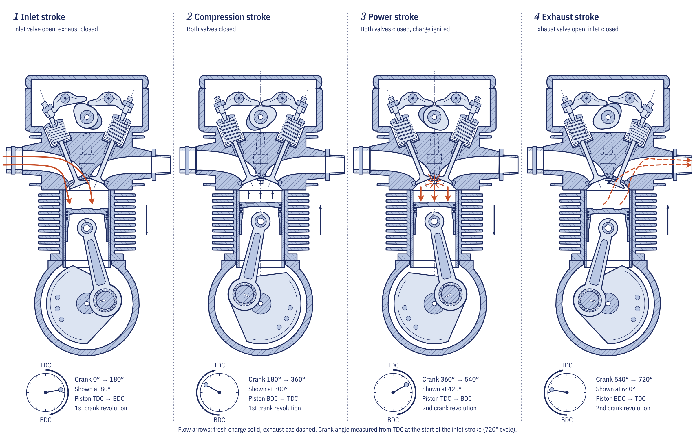
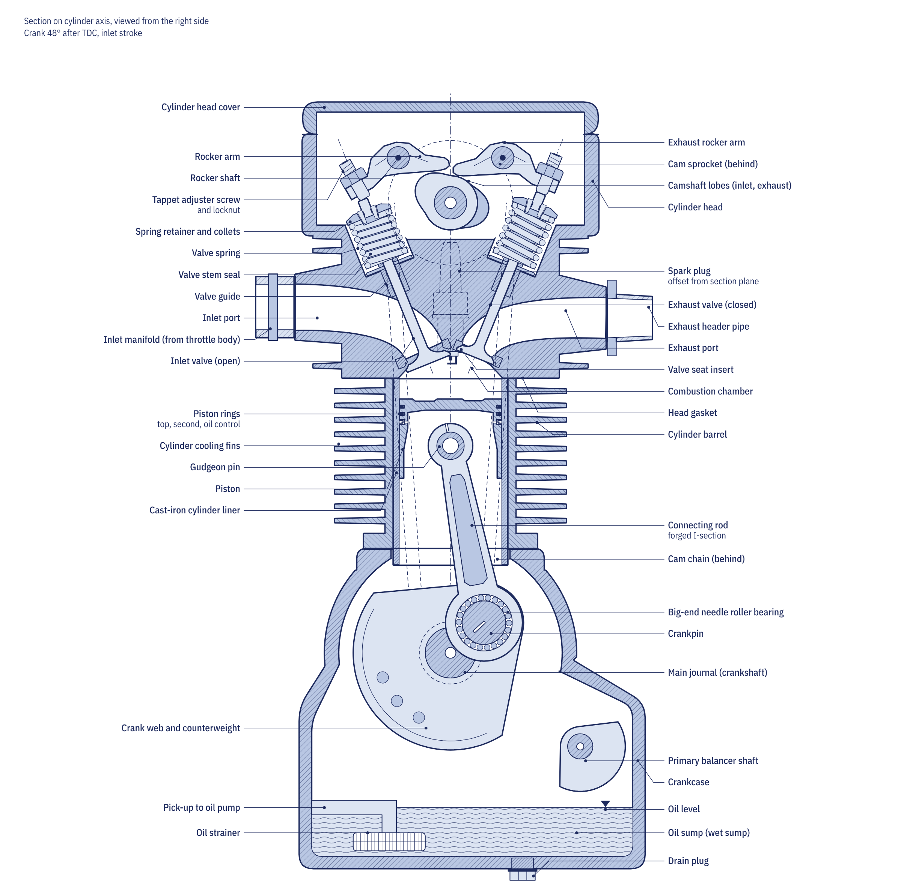

The short answer
Almost every petrol motorcycle on the road uses a four-stroke engine. Inside it, a piston slides up and down a cylinder. A connecting rod links the piston to the crankshaft, which converts the piston's straight-line motion into rotation, in the same way that a cyclist's legs turn the pedal cranks. Two valves in the cylinder head let fresh mixture in and burnt gas out, and a spark plug lights the charge at the right moment.
The engine repeats the same sequence of four piston strokes, two up and two down, thousands of times a minute. Because each cylinder fires only once in every two revolutions of the crankshaft, a single-cylinder engine relies on the weight of its crank webs and alternator rotor to carry it through the three strokes that do not produce power.
Where the force comes from
Petrol burned with the right amount of air releases a large amount of heat. At the chemically correct ratio of about 14.7 kg of air for each kilogram of fuel, the gas temperature in the combustion chamber climbs to roughly 2,300 to 2,600 K and the pressure peaks at around 4 to 7 MPa in a typical road engine. That pressure acting on the piston crown is the source of all the engine's work.
Combustion is not an explosion. The spark starts a small flame kernel, and a turbulent flame front crosses the chamber over roughly 40 to 60 degrees of crank rotation. For that reason the spark fires before the piston reaches the top of its stroke, so that peak pressure arrives just after top dead centre, when the crank has leverage. The K-Light 125 commuter used as the worked example in the Moto Zero course fires at 15 degrees before top dead centre at idle, and its engine management advances the timing as speed rises.
The four-stroke cycle, one stroke at a time
A full cycle takes two crankshaft revolutions, or 720 degrees. The camshaft that opens the valves is driven at half crankshaft speed, so each valve opens once per cycle.

1. Intake
The piston moves down from top dead centre with the inlet valve open. The volume above it grows faster than air can follow, so cylinder pressure drops slightly below atmospheric, and air and fuel are drawn in through the throttle body or carburettor. At full throttle the incoming air moves at 50 to 100 m/s, and its momentum keeps it flowing into the cylinder even after the piston has passed bottom dead centre.
2. Compression
The inlet valve closes and the rising piston squeezes the trapped charge into the small space left in the cylinder head. Compression heats the mixture and finishes evaporating the fuel. A healthy K-Light 125 shows a cranking compression of 1.0 to 1.2 MPa on a gauge, which is one of the first numbers a technician checks on a tired engine.
3. Power
The spark plug fires near the end of compression. Pressure peaks shortly after top dead centre and drives the piston down. Most of the useful work is done in the first 60 to 90 degrees of this stroke, while the pressure is still high.
4. Exhaust
The exhaust valve opens before the piston reaches the bottom. The first rush of high-pressure gas, called blowdown, leaves at close to the speed of sound, and the rising piston pushes out most of the rest. A small amount of burnt gas, typically 5 to 15 per cent, always stays behind in the combustion chamber and mixes with the next charge.
Why the valves open early and close late
If each valve opened and closed exactly at the dead centres, the engine would breathe poorly, because gas has inertia and a valve needs time to lift. Camshafts are therefore ground so that the inlet valve opens a few degrees before top dead centre and closes well after bottom dead centre, and the exhaust valve opens before bottom dead centre and closes after top dead centre. The short period around top dead centre when both valves are open is called valve overlap.
A commuter single typically has 10 to 30 degrees of overlap, which gives a steady idle and low emissions. A sports four-valve engine may have 50 to 80 degrees, which helps it breathe at high revs but makes idle rough. Chapter 2.2 of the course, The four-stroke cycle, shows how to calculate valve duration and lobe centre from a timing diagram.
Displacement and compression ratio
Displacement is the volume the piston sweeps in one stroke, multiplied by the number of cylinders. It is calculated from the bore (cylinder diameter) and the stroke (piston travel): bore × bore × stroke × 0.785. The K-Light 125 has a bore of 56.5 mm and a stroke of 49.5 mm, the same as the Honda CG125, which works out at 124 cm³.
The compression ratio compares the total volume above the piston at the bottom of its stroke with the small clearance volume left at the top. The K-Light runs 9:1, typical of an air-cooled commuter single; liquid-cooled four-valve sports engines run 12 to 14:1. A higher ratio extracts more work from each charge, but it also brings the engine closer to knock, so fuel octane, cooling and combustion chamber shape set the practical limit.
A real small air-cooled engine converts only about 28 to 32 per cent of the fuel's energy into work at its best operating point, and much less in town at part throttle. The rest leaves as heat through the exhaust, the cylinder fins and the oil.
The main parts, top to bottom

- Cylinder head. Holds the inlet and exhaust valves (inlet valve, exhaust valve), their springs, the camshaft and the spark plug. On most commuter singles a chain from the crankshaft drives a single overhead camshaft, which opens the valves through rocker arms.
- Cylinder. The bore the piston runs in. On an air-cooled engine its fins shed heat into the passing air.
- Piston and rings. The rings seal the piston against the cylinder wall so that compression and combustion pressure cannot leak into the crankcase, and they scrape excess oil back down.
- Connecting rod and crankshaft. Turn the up-and-down motion into rotation. Counterweights on the crank webs, and often a balancer shaft, reduce vibration.
- Crankcase and sump. On most motorcycles the crankcase also houses the gearbox and the wet clutch, so one oil lubricates all three. That is why a motorcycle needs oil rated JASO MA or MA2 rather than an energy-conserving car oil.
Singles, twins and fours
A single-cylinder engine fires once every 720 degrees, which gives strong pulses and a simple, cheap, economical engine; that is why it dominates commuter and taxi motorcycles. Adding cylinders shortens the gap between power strokes. A 270-degree parallel twin fires at intervals of 270 and 450 degrees, the same rhythm as a 90-degree V-twin, while a flat-plane inline four fires every 180 degrees and runs very smoothly at high revs. More cylinders mean smaller pistons that can rev higher, at the cost of more parts and more weight.
The same four strokes happen in every one of these engines. The two-stroke engine, which completes its cycle in a single revolution, works differently, and our article on two-stroke versus four-stroke engines explains how.
When an engine will not start or runs badly, the same three needs (compression, a timed spark and the right mixture) give the order of diagnosis. Our guide to a motorcycle that will not start works through them, and the Repair section's problem finder lists common engine faults by symptom.
Frequently asked questions
How many strokes does a motorcycle engine have?
Most modern motorcycle engines are four-strokes: intake, compression, power and exhaust, completed over two crankshaft revolutions. Two-stroke engines, still used in some off-road and older commuter machines, complete the cycle in one revolution.
Why does a four-stroke engine need valves?
Valves open and close the passages for fresh mixture and exhaust gas at the right moments in the cycle. A camshaft turning at half crankshaft speed opens each valve once per cycle and springs close it again.
What does 125 cc mean on a motorcycle?
It is the swept volume, or displacement, of the engine in cubic centimetres: the volume the piston sweeps between the bottom and the top of its stroke. A 56.5 mm bore and 49.5 mm stroke give 124 cm³, which is sold as a 125.
Why do motorcycles need special engine oil?
On most motorcycles the engine oil also lubricates the gearbox and the wet clutch. Car oils with friction modifiers make the clutch slip, so motorcycle oils are tested to the JASO MA or MA2 friction standard.
Written by Transitions Lab for the Moto Zero open motorcycle course. Text and illustrations are licensed CC BY-SA 4.0. Figures and values come from the course modules; see sources and credits.